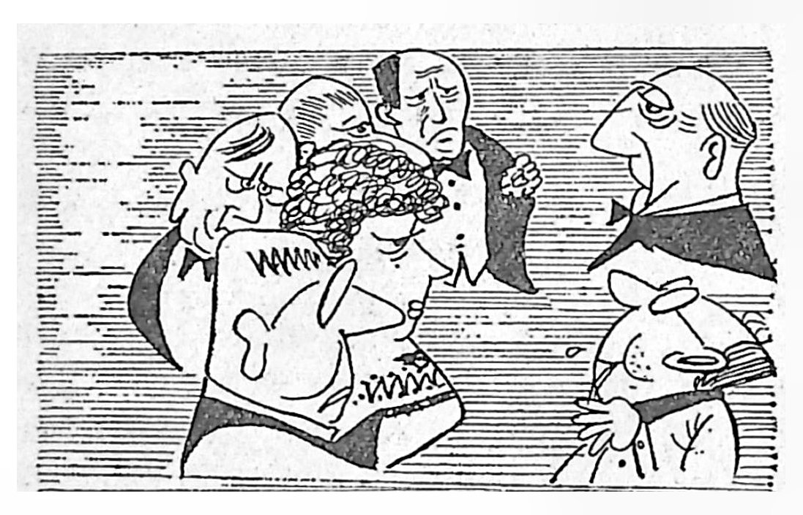

佚名 《人事》1987年第5期（总第20期），第38页
无题（《IBM人事管理》配图）
Untitled (drawing in “IBM's Personnel Management”)
- Description
- Several men in dinner jackets and bow ties crowd together against a hatched background.
- Note
- Printed without caption, credit or source inside an article on personnel management at IBM. The drawing style suggests a reprinted Western cartoon (tagged foreign on that basis), but this is an inference.
- Artist
- Unattributed 佚名
- Published in
- 《人事》1987年第5期（总第20期）, p. 38
- Themes
- Foreign cartoons

Cite
Unattributed, “无题（《IBM人事管理》配图）” [Untitled (drawing in “IBM's Personnel Management”)], Renshi (Personnel) 《人事》, 1987, no. 5, p. 38.